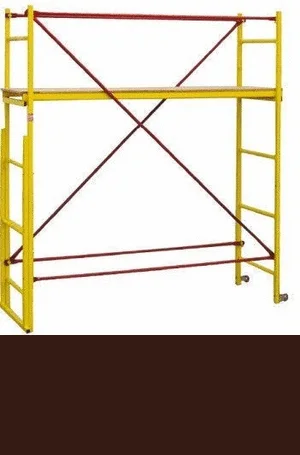
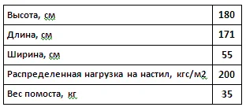
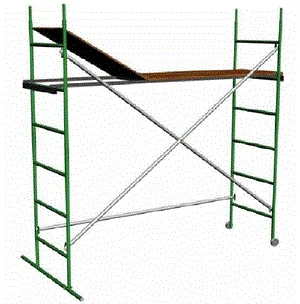
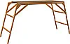
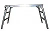

ПОМОСТ МАЛЯРНЫЙ 
"ПМ-200" с ногой для лестниц
Помост малярный ПМ-200 (далее помост), предназначен для производства отделочных, ремонтных и монтажных работ, как снаружи, так и внутри помещений на лестничных маршах. Нога выдвигается с шагом 150 мм. максимальной высотой 600 мм.
ТЕХНИЧЕСКИЕ ХАРАКТЕРИСТИКИ

СТОИМОСТЬ: 7100руб.
___________________________________________________________________________________________
ПОДМОСТИ ПЕРЕДВИЖНЫЕ, УНИВЕРСАЛЬНЫЕ, СТРОИТЕЛЬНО- БЫТОВЫЕ
"ПМ-200" без ноги

Подмости "ПМ-200" предназначены для проведения монтажных, отделочных и ремонтных работ, как внутри,так и снаружи помещения, на высоте до 1.8 метра. Конструктивно преду- смотрена возможность работать на высоте до 3.6 м (в сдвоенном варианте подмостей).
ТЕХНИЧЕСКИЕ ХАРАКТЕРИСТИКИ
СТОИМОСТЬ: 8 500 руб.
___________________________________________________________________________________________
Столик малярный универсальный складной

Малярный помост удобен при различныхна небольшой высоте. Компактен, имеет простую конструкцию, легко собирается. Настил съемный, материал - фанера с защитной пропиткой.
| Технические характеристики: | Помост |
| Грузоподъемность, кг | 150 |
| Высота рабочей площадки, мм | 800 |
| Размер рабочей площадки, мм | 920 х 500 |
| Масса, кг | 18,5 |
| Цена, руб. | 3 050 |
__________________________________________________________________________________________
Столик малярный универсальный складной "Фишка"

Легкий, малогабаритный малярный столик, изготовленный из стали. Окрашен порошковым способом. Настил произведен из фанеры с защитной пропиткой.
| Помост "Фишка" | |
| Грузоподъемность, кг | 150 |
| Высота до площадки, мм | 870 |
| Размер площадки, мм | 470*1020 |
| Масс, кг | 18,5 |
| Цена, руб. | 3 500 |
__________________________________________________________________________________________
Площадка монтажные ПМ-600, ПМ-800, ПМТ-1300 с регулируемой высотой

Предназначены для проведения различных строительных работ на высоте до 2,5 м. ПМТ-1300 на высоте до 3 метров.
| ПМ-600 | ПМ-800 | ПМТ-1300 | |
| Грузоподъемность, кг | 120 | 120 | 120 |
| Высота, мм | 600 | 800 | 800-1300 |
| Размер рабочей площадки, мм | 800*400 | 800*400 | 1000*450 |
| Масса, кг | 6,3 | 7,1 | 8,5 |
| Цена, руб. | 20300 |
23800 |
27900 |
__________________________________________________________________________________________
Площадка монтажная большегрузная ПМБ-900

Площадка монтажная большегрузная ПМБ-900 изготовлена из алюминиевого сплава и предназначены для проведения строительных, монтажных и других видов работ на высоте до 2,5 метров.
| ПМБ-900 | |
| Грузоподъемность, кг | 500 |
| Высота, мм | 900 |
| Размер рабочей площадки, мм | 750*2000 |
| Масса, кг | 33 |
| Цена, руб. | 84 400 |
__________________________________________________________________________________________